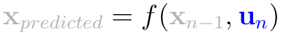

NOTE: This guide is currently a work in progress.
Introduction
In this second article, we will use Kalman filters for non-linear situations.
This guide will cover:
- How to filter noise in non-linear models with Kalman filters.
- Example code implementing non-linear Kalman filters in Python.
Why and How?
Kalman filters, as mentioned in Kalman Filters for Undergrads 1, are linear. In the canonical form Kalman filters can solve elementary physics problems like cannonballs in flight. However, useful real-world problems are seldom linear.
How do we take a linear Kalman filter and use it for non-linear problems? Effectively, we use the equivalent of a first-order Taylor expansion -- we linearize around our best guess of the state and then use the linear Kalman filter with our approximation.
Linear Kalman filters are provably optimal. However, non-linear (extended) Kalman filters are not. Since we put the non-linear problem through a set of linear approximations, it will diverge from the actual problem similar to the divergence of a polygonal approximation of a differential equation using Euler's method.
(needs a picture)
Despite this lack of optimality, non-linear (extended) Kalman filters are useful for making estimations using real world data.
Non-Linear (Extended) Kalman Filters
WARNING: This section is incomplete and most likely wrong right now!
BLUE = inputs ORANGE = outputs BLACK = constants GRAY = intermediary variables
|
State Prediction (Predict where we're gonna be) |
 |
Single-Variable Example
In the linear tutorial, our single-variable example was a noisy but constant voltage graph (DC). Similarly, the single-variable example for non-linear Kalman filters will be sinusoidal voltage (AC).
First, let's define the situation in Python. We'll create an object that defines the sinusoidal voltage pattern and give it random noise.
(bunch of Python code)
Before using the EKF, let's try using the linear Kalman filter to do this. I'm not going to explain the parameters in-depth here (look at the linear tutorial for that), but here's a graph of what happens:
(graph)
Our objective is to do better than this with an Extended Kalman Filter.
First, we need to define problem in terms of an Extended Kalman Filter. To do this, we need to establish the state transition and control functions, as well as the Jacobians that the EKF expects. Let's begin:
(bunch of math stuff)
Now that we have the relevant matrices and functions that we need, let's plug all this into a Python script.
(bunch of Python code)
From this, we get the following graph:
(graph)
As you can see, the error is much less than with a normal linear Kalman filter. However, let's show what happens when you don't set up the problem correctly and use the wrong Jacobian:
(graph)
Here, I deliberately used the wrong Jacobian for the state transition. As you can see, it diverges wildly from the real answer. This is why it's vital that you're sure your mathematical model of the situation is correct -- the EKF can make your results much more accurate, or it can make it useless.
Multiple-Variable Example
Conclusion
References
- Extended Kalman filter: I used Wikipedia's equations for the EKF for color-coding.